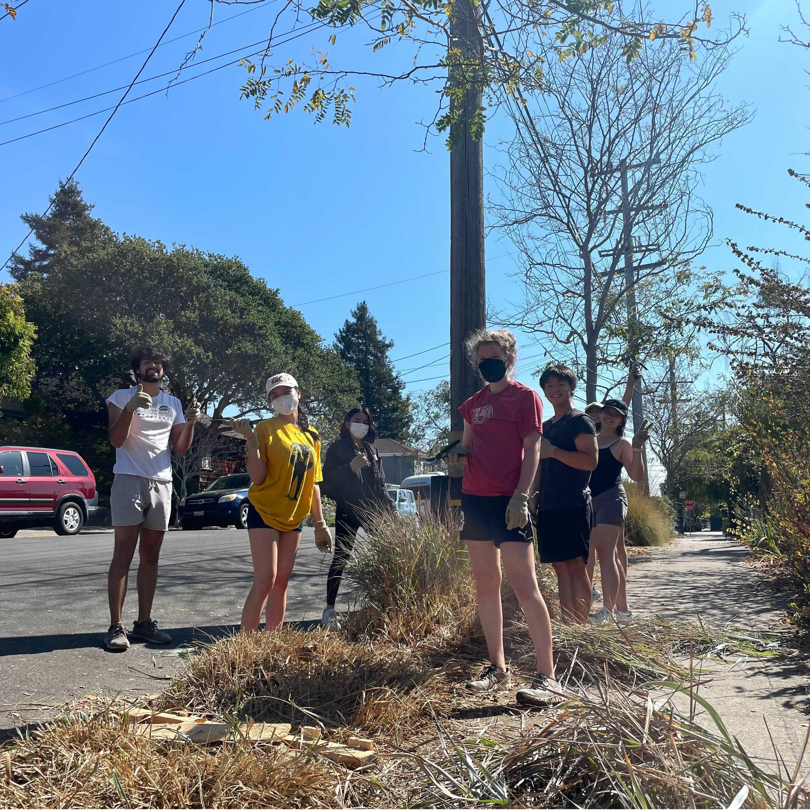

Sustained Sites
While planning Berkeley Project Day is the main objective, committee members build lasting relationships with community leaders by volunteering at sustained sites throughout the semester. These sites give us the opportunity to engage in community service just as our volunteers do during Berkeley Project Day.


